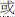

3: The Book of the Threes
64. Sarabha
- fdg sc © Translated from the Pali by Bhikkhu Bodhi (More copyright information)
1On one occasion the Blessed One was dwelling at Rājagaha on Mount Vulture Peak. Now on that occasion a wanderer named Sarabha had recently left this Dhamma and discipline.[n.446] Mp explains that he had been commissioned by the wanderers in his own community to take ordination with the bhikkhus, learn the secret of their success (which they believed to be a kind of magic they used to attract followers), and then return and share it with them. After his ordination he concluded that the Pāṭimokkha was the key to their success. Having learned the Pāṭimokkha, he returned to the wanderers and reported that he had learned the Dhamma of the Buddha’s followers. The background story is similar to that of the Susīma Sutta (SN 12:70, II 119–28) but has a different outcome. He had been telling an assembly in Rājagaha: "I have learned the Dhamma of the ascetics who follow the Sakyan son. After I learned their Dhamma, I left that Dhamma and discipline..
Then, one morning, a number of bhikkhus dressed, took their bowls and robes, and entered Rājagaha for alms. They then heard the wanderer Sarabha making such a statement to an assembly in Rājagaha.
2When those bhikkhus had walked for alms in Rājagaha, after their meal, when they returned from their alms round, they approached the Blessed One, paid homage to him, sat down to one side, and said to him.
"Bhante, the wanderer Sarabha, who recently left this Dhamma and discipline, has been telling an assembly in Rājagaha: ‘I have learned the Dhamma of the ascetics who follow the Sakyan son. After I learned their Dhamma, I left that Dhamma and discipline.’ It would be good, Bhante, if the Blessed One would go to the wanderers’ park on the bank of the Sappinikā (river) and, out of compassion, approach the wanderer Sarabha." The Blessed One consented by silence.
3Then, in the evening, the Blessed One emerged from seclusion and went to the wanderers’ park on the bank of the Sappinikā (river). He approached the wanderer Sarabha, sat down on the seat that was prepared for him, and said to him: "Is it true, Sarabha, that you have been saying: ‘I have learned the Dhamma of the ascetics who follow the Sakyan son. After I learned their Dhamma, I left that Dhamma and discipline’?" When this was said, the wanderer Sarabha was silent.
4A second time the Blessed One said to the wanderer Sarabha: "Tell me, Sarabha, how have you learned the Dhamma of the ascetics who follow the Sakyan son? If you have not learned it completely, I will complete it. But if you have learned it completely, I will rejoice." But a second time the wanderer Sarabha was silent.
5A third time the Blessed One said to the wanderer Sarabha:[n.447] Ee has an additional line here: mayā kho Sarabha paññāyati samaṇānaṁ Sakyaputtiyānaṁ dhammo: "Sarabha, the Dhamma of the ascetics who follow the Sakyan son has been seen by me." Be has a variant on this line in parentheses but Ce does not have anything corresponding to it. "Tell me, Sarabha, how have you learned the Dhamma of the ascetics who follow the Sakyan son? If you have not learned it completely, I will complete it. But if you have learned it completely, I will rejoice." But a third time the wanderer Sarabha was silent.[n.448] At MN 35.11, I 231,27–28, 32–35, it is said: "If anyone, when asked a reasonable question up to the third time by the Tathāgata, still does not answer, his head splits into seven pieces then and there." Here, however, Sarabha fails to answer the Buddha’s question after it has been posed three times, yet his head remains intact and no threat is raised against him.
6Then those wanderers said to the wanderer Sarabha: "The ascetic Gotama has offered to give you whatever you might ask him for, friend Sarabha. Speak, friend Sarabha! How have you learned the Dhamma of the ascetics who follow the Sakyan son? If you have not learned it completely, the ascetic Gotama will complete it for you. But if you have learned it completely, he will rejoice." When this was said, the wanderer Sarabha sat silenced, disconcerted, hunched over, downcast, glum, and speechless.
7Then the Blessed One, having understood that the wanderer Sarabha (sat) silenced, disconcerted, hunched over, downcast, glum, and speechless, said to those wanderers:
8(1) "Wanderers, if anyone should say about me: ‘Though you claim to be perfectly enlightened, you are not fully enlightened about these things,’ I might question him closely about this matter, interrogate him, and cross-examine him.[n.449] This is the first of the Buddha’s four kinds of self-confidence (vesārajja), on which see AN4.8. The second claim, just below, refers to the second kind of self-confidence, and the third claim to the fourth kind of self-confidence. The third kind of self-confidence is not included here. When he is being closely questioned by me, interrogated, and cross-examined, it is impossible and inconceivable that he would not incur one or another of three consequences: he would either answer evasively and divert the discussion to an irrelevant subject; (or) display anger, hatred, and bitterness; or would sit silenced, disconcerted, hunched over, downcast, glum, and speechless, just like the wanderer Sarabha.[n.450] From the Pāli, it is unclear what the three alternatives are in this statement. In Ce the disjunctive vā occurs only twice in this sentence, suggesting only two alternatives. Ee has three occurrences of vā, but tuṇhībhūto vā maṅkubhūto vā divides two terms that normally belong to a single alternative. Be has only one vā, which leaves the question of the alternatives even more obscure. I have chosen to separate "he would answer evasively … " and "display anger, hatred, and bitterness," even though we often find the sequence without a disjunction: aññenaññaṁ paṭicarati, bahiddhā kathaṁ apanāmeti, kopañca dosañca appaccayañca pātukaroti. In this respect, I have followed the divisions of the Chinese parallel, SĀ 970, which at T II 250b21–23 does offer three distinct alternatives: : “He would divert the discussion to an outside subject, or (), overcome by anger and conceit, would unreasonably display hostility and impatience, or () would silently harbor shame, his head lowered, privately reflecting.”
9(2) "If, wanderers, anyone should say about me: ‘Though you claim to be one whose taints are destroyed, you have not fully destroyed these taints,’ I might question him closely about this matter, interrogate him, and cross-examine him. When he is being closely questioned by me, interrogated, and cross-examined, it is impossible and inconceivable that he would not incur one or another of three consequences: he would either answer evasively and divert the discussion to an irrelevant subject; (or) display anger, hatred, and bitterness; or would sit silenced, disconcerted, hunched over, downcast, glum, and speechless, just like the wanderer Sarabha.
10(3) "If, wanderers, anyone should say about me: ‘The Dhamma does not lead one who practices it to the complete destruction of suffering, the goal for the sake of which you teach it,’[n.451] Yassa kho pana te atthāya dhammo desito so na niyyāti takkarassa sammā dukkhakkhayāyā ti. Mp takes yassa atthāya to mean “the purpose for which” the Dhamma is taught, identified as the destruction of lust, etc., and “the Dhamma” to be meditation on unattractiveness, etc. The verb niyyāti means “goes out” (to the complete destruction of suffering). Takkarassa is likely to be a sandhi formation: takkaro assa.
I have been able to track down two Chinese versions of the phrase (there may be more): (1) EĀ 27.6 (T II 645c10–11) reads ("It is impossible that this outward-going Dharma of the noble ones does not go out to the complete end of suffering"). (2) EĀ 46.4 (T II 776c28 – 777a2) has  ("By this Dharma taught by me the noble ones go out correctly to the complete end of suffering. It is impossible that any ascetic (etc.) could come and say: ‘(They) have not reached the complete end of suffering’"). I might question him closely about this matter, interrogate him, and cross-examine him. When he is being closely questioned by me, interrogated, and cross-examined, it is impossible and inconceivable that he would not incur one or another of three consequences: he would either answer evasively and divert the discussion to an irrelevant subject, (or) display anger, hatred, and bitterness, or would sit silenced, disconcerted, hunched over, downcast, glum, and speechless, just like the wanderer Sarabha."
("By this Dharma taught by me the noble ones go out correctly to the complete end of suffering. It is impossible that any ascetic (etc.) could come and say: ‘(They) have not reached the complete end of suffering’"). I might question him closely about this matter, interrogate him, and cross-examine him. When he is being closely questioned by me, interrogated, and cross-examined, it is impossible and inconceivable that he would not incur one or another of three consequences: he would either answer evasively and divert the discussion to an irrelevant subject, (or) display anger, hatred, and bitterness, or would sit silenced, disconcerted, hunched over, downcast, glum, and speechless, just like the wanderer Sarabha."
Then the Blessed One, having roared his lion's roar three times in the wanderers’ park on the bank of the Sappinikā (river), rose up into the air and departed.[n.452] Here the Chinese of SĀ 970, at T II 250b28, has simply "he got up from his seat and left" () without a supernormal departure.
11Then, soon after the Blessed One had left, those wanderers gave the wanderer Sarabha a thorough verbal lashing,[n.453] Vācāya sattitodakena sañjambharim akaṁsu. Be and Ee have sannitodakena for Ce sattitodakena. The Chinese counterpart at T II 250c8 says simply: "they reproached him and censured him to his face" (). (saying:) "Just as an old jackal in a huge forest might think: ‘I will roar a lion's roar,’ and yet would only howl and yelp like a jackal, so, friend Sarabha, claiming in the absence of the ascetic Gotama: ‘I will roar a lion's roar,’ you only howled and yelped like a jackal. Just as, friend Sarabha, a chick might think: ‘I will sing like a cock,’ and yet would only sing like a chick, so, friend Sarabha, claiming in the absence of the ascetic Gotama: ‘I will sing like a cock,’ you only sang like a chick.[n.454] Seyyathāpi, āvuso sarabha, ambakamaddari ‘phussakaravitaṁ ravissāmī’ ti ambakamaddariravitaṁyeva ravati. Be has ambukasañcārī for Ce and Ee ambakamaddari and purisaka for phussaka. I have taken some liberty in rendering the obscure names of these birds in order to bring out the sense. Mp Ce glosses ambakamaddari as a small chicken (khuddakakukkuṭikā) and phussaka as a large chicken (mahākukkuṭa). The Chinese parallel, at T II 250c3, has: "Just as a woman might try to make the sound of a man but only makes the sound of a woman" (). Pāli purisakaravitaṁ might be understood as the crying out of a man, and ambaka as a woman, but in the absence of a clear and simple contrast between ambaka and purisa in the same edition, I follow Mp's gloss. Just as, friend Sarabha, a bull might think to bellow deeply in an empty cow shed, so, friend Sarabha, in the absence of the ascetic Gotama you thought you could bellow deeply." (In this way) those wanderers gave the wanderer Sarabha a thorough verbal lashing.
1Evaṁ me sutaṁ— ekaṁ samayaṁ bhagavā rājagahe viharati gijjhakūṭe pabbate. Tena kho pana samayena sarabho nāma paribbājako acirapakkanto hoti imasmā dhammavinayā. So rājagahe parisati evaṁ vācaṁ bhāsati: "aññāto mayā samaṇānaṁ sakyaputtikānaṁ dhammo. Aññāya ca panāhaṁ samaṇānaṁ sakyaputtikānaṁ dhammaṁ evāhaṁ tasmā dhammavinayā apakkanto"ti.
Atha kho sambahulā bhikkhū pubbaṇhasamayaṁ nivāsetvā pattacīvaramādāya rājagahaṁ piṇḍāya pavisiṁsu. Assosuṁ kho te bhikkhū sarabhassa paribbājakassa rājagahe parisati evaṁ vācaṁ bhāsamānassa: "aññāto mayā samaṇānaṁ sakyaputtikānaṁ dhammo. Aññāya ca panāhaṁ samaṇānaṁ sakyaputtikānaṁ dhammaṁ evāhaṁ tasmā dhammavinayā apakkanto"ti.
2Atha kho te bhikkhū rājagahe piṇḍāya caritvā pacchābhattaṁ piṇḍapātapaṭikkantā yena bhagavā tenupasaṅkamiṁsu; upasaṅkamitvā bhagavantaṁ abhivādetvā ekamantaṁ nisīdiṁsu. Ekamantaṁ nisinnā kho te bhikkhū bhagavantaṁ etadavocuṁ:.
"sarabho nāma, bhante, paribbājako acirapakkanto imasmā dhammavinayā. So rājagahe parisati evaṁ vācaṁ bhāsati: ‘aññāto mayā samaṇānaṁ sakyaputtikānaṁ dhammo. Aññāya ca panāhaṁ samaṇānaṁ sakyaputtikānaṁ dhammaṁ evāhaṁ tasmā dhammavinayā apakkanto’ti. Sādhu, bhante, bhagavā yena sippinikātīraṁ paribbājakārāmo yena sarabho paribbājako tenupasaṅkamatu anukampaṁ upādāyā"ti. Adhivāsesi bhagavā tuṇhībhāvena.
3Atha kho bhagavā sāyanhasamayaṁ paṭisallānā vuṭṭhito yena sippinikātīraṁ paribbājakārāmo yena sarabho paribbājako tenupasaṅkami; upasaṅkamitvā paññatte āsane nisīdi. Nisajja kho bhagavā sarabhaṁ paribbājakaṁ etadavoca: "Saccaṁ kira tvaṁ, sarabha, evaṁ vadesi: ‘aññāto mayā samaṇānaṁ sakyaputtikānaṁ dhammo. Aññāya ca panāhaṁ samaṇānaṁ sakyaputtikānaṁ dhammaṁ evāhaṁ tasmā dhammavinayā apakkanto’"ti? Evaṁ vutte, sarabho paribbājako tuṇhī ahosi.
4Dutiyampi kho bhagavā sarabhaṁ paribbājakaṁ etadavoca: "vadehi, sarabha, kinti te aññāto samaṇānaṁ sakyaputtikānaṁ dhammo? Sace te aparipūraṁ bhavissati, ahaṁ paripūressāmi. Sace pana te paripūraṁ bhavissati, ahaṁ anumodissāmī"ti. Dutiyampi kho sarabho paribbājako tuṇhī ahosi.
5Tatiyampi kho bhagavā sarabhaṁ paribbājakaṁ etadavoca: "yo kho, sarabha, paññāyati samaṇānaṁ sakyaputtikānaṁ dhammo vadehi, sarabha, kinti te aññāto samaṇānaṁ sakyaputtikānaṁ dhammo? Sace te aparipūraṁ bhavissati, ahaṁ paripūressāmi. Sace pana te paripūraṁ bhavissati, ahaṁ anumodissāmī"ti. Tatiyampi kho sarabho paribbājako tuṇhī ahosi.
6Atha kho te paribbājakā sarabhaṁ paribbājakaṁ etadavocuṁ: "yadeva kho tvaṁ, āvuso sarabha, samaṇaṁ gotamaṁ yāceyyāsi tadeva te samaṇo gotamo pavāreti. Vadehāvuso sarabha, kinti te aññāto samaṇānaṁ sakyaputtikānaṁ dhammo? Sace te aparipūraṁ bhavissati, samaṇo gotamo paripūressati. Sace pana te paripūraṁ bhavissati, samaṇo gotamo anumodissatī"ti. Evaṁ vutte, sarabho paribbājako tuṇhībhūto maṅkubhūto pattakkhandho adhomukho pajjhāyanto appaṭibhāno nisīdi.
7Atha kho bhagavā sarabhaṁ paribbājakaṁ tuṇhībhūtaṁ maṅkubhūtaṁ pattakkhandhaṁ adhomukhaṁ pajjhāyantaṁ appaṭibhānaṁ viditvā te paribbājake etadavoca:
8"Yo kho maṁ, paribbājakā, evaṁ vadeyya: ‘sammāsambuddhassa te paṭijānato ime dhammā anabhisambuddhā’ti, tamahaṁ tattha sādhukaṁ samanuyuñjeyyaṁ samanugāheyyaṁ samanubhāseyyaṁ. So vata mayā sādhukaṁ samanuyuñjiyamāno samanugāhiyamāno samanubhāsiyamāno aṭṭhānametaṁ anavakāso yaṁ so tiṇṇaṁ ṭhānānaṁ nāññataraṁ ṭhānaṁ nigaccheyya, aññena vā aññaṁ paṭicarissati, bahiddhā kathaṁ apanāmessati, kopañca dosañca appaccayañca pātukarissati, tuṇhībhūto maṅkubhūto pattakkhandho adhomukho pajjhāyanto appaṭibhāno nisīdissati, seyyathāpi sarabho paribbājako.
9Yo kho maṁ, paribbājakā, evaṁ vadeyya: ‘khīṇāsavassa te paṭijānato ime āsavā aparikkhīṇā’ti, tamahaṁ tattha sādhukaṁ samanuyuñjeyyaṁ samanugāheyyaṁ samanubhāseyyaṁ. So vata mayā sādhukaṁ samanuyuñjiyamāno samanugāhiyamāno samanubhāsiyamāno aṭṭhānametaṁ anavakāso yaṁ so tiṇṇaṁ ṭhānānaṁ nāññataraṁ ṭhānaṁ nigaccheyya, aññena vā aññaṁ paṭicarissati, bahiddhā kathaṁ apanāmessati, kopañca dosañca appaccayañca pātukarissati, tuṇhībhūto maṅkubhūto pattakkhandho adhomukho pajjhāyanto appaṭibhāno nisīdissati, seyyathāpi sarabho paribbājako.
10Yo kho maṁ, paribbājakā, evaṁ vadeyya: ‘yassa kho pana te atthāya dhammo desito, so na niyyāti takkarassa sammā dukkhakkhayāyā’ti, tamahaṁ tattha sādhukaṁ samanuyuñjeyyaṁ samanugāheyyaṁ samanubhāseyyaṁ. So vata mayā sādhukaṁ samanuyuñjiyamāno samanugāhiyamāno samanubhāsiyamāno aṭṭhānametaṁ anavakāso yaṁ so tiṇṇaṁ ṭhānānaṁ nāññataraṁ ṭhānaṁ nigaccheyya, aññena vā aññaṁ paṭicarissati, bahiddhā kathaṁ apanāmessati, kopañca dosañca appaccayañca pātukarissati, tuṇhībhūto maṅkubhūto pattakkhandho adhomukho pajjhāyanto appaṭibhāno nisīdissati, seyyathāpi sarabho paribbājako"ti.
Atha kho bhagavā sippinikātīre paribbājakārāme tikkhattuṁ sīhanādaṁ naditvā vehāsaṁ pakkāmi.
11Atha kho te paribbājakā acirapakkantassa bhagavato sarabhaṁ paribbājakaṁ samantato vācāyasannitodakena sañjambharimakaṁsu: "Seyyathāpi, āvuso sarabha, brahāraññe jarasiṅgālo ‘sīhanādaṁ nadissāmī’ti siṅgālakaṁyeva nadati, bheraṇḍakaṁyeva nadati; evamevaṁ kho tvaṁ, āvuso sarabha, aññatreva samaṇena gotamena ‘sīhanādaṁ nadissāmī’ti siṅgālakaṁyeva nadasi bheraṇḍakaṁyeva nadasi. Seyyathāpi, āvuso sarabha, ambukasañcarī ‘purisakaravitaṁ ravissāmī’ti ambukasañcariravitaṁyeva ravati; evamevaṁ kho tvaṁ, āvuso sarabha, aññatreva samaṇena gotamena ‘purisakaravitaṁ ravissāmī’ti, ambukasañcariravitaṁyeva ravasi. Seyyathāpi, āvuso sarabha, usabho suññāya gosālāya gambhīraṁ naditabbaṁ maññati; evamevaṁ kho tvaṁ, āvuso sarabha, aññatreva samaṇena gotamena gambhīraṁ naditabbaṁ maññasī"ti. Atha kho te paribbājakā sarabhaṁ paribbājakaṁ samantato vācāyasannitodakena sañjambharimakaṁsūti.
Catutthaṁ.